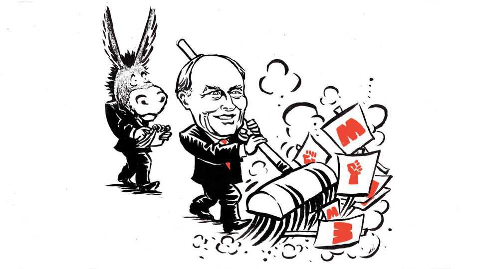

What Britain can teach Democrats about the ultra-Left
How to stop extremists from making a party unelectable

Aug 13th 2026
Neil Kinnock is best known in America as the man whose oratory Joe Biden plagiarised. In 1987 Mr Biden was so taken by the British Labour Party leader’s line about being the first of his family “in a thousand generations” to attend college that he borrowed it. At first, with due credit. Then, on television, without. The ensuing furore helped sink Mr Biden’s first run for the presidency.
Yet Lord Kinnock, as he is now known, is not just the man who condemned Mr Biden to another 21 gruelling years in the Senate. He also helped make Britain’s main centre-left party electable again, by purging hard-left extremists who had infiltrated it. His story is one the Democratic Party could usefully study.
It, too, is struggling with infiltrators: the Democratic Socialists of America (DSA), a populist-left group that is on a roll. The DSA stumbled this week when Francesca Hong, who once called for abolishing the police, narrowly lost the Democratic nomination to be Wisconsin’s next governor. But candidates backed by the DSA are winning enough primaries, and making enough noise, to delight Republicans.
The parallel with Britain in the 1980s is striking. Back then Margaret Thatcher, the Conservative prime minister, was enraging the left by curbing unions and privatising state-owned industries. (Maggie, unlike MAGA, believed in free markets.) Labour was desperate to unseat her, but first had to convince voters it was trustworthy. This was made harder by Militant, a Marxist group that practised “entryism”: rather than running for office under their own banner, its cadres entered a larger party and sought to turn it far to the left—just as the DSA does with the Democrats.
Militant was more extreme than the DSA—and more secretive. In public, it offered simple slogans: shorter hours, higher wages, nationalise the 200 biggest private companies, and so on. But this public platform was, following Leon Trotsky’s formula, merely a step towards its true, secret agenda: leading a revolution, like the one in Russia before Stalin went too far.
Militant’s leaders were, to put it mildly, out of touch with the median voter. Pat Wall, a Militant-backed Labour candidate in Bradford, called for the overthrow of the state and predicted a “civil war” with “terrible death and destruction and bloodshed”.
Unsurprisingly, Militant’s secret agenda did not remain secret. Britain in the 1980s had a gloriously muckraking press and a ruling party that played hardball, as a non-cricketing nation might put it. A Sunday Times reporter tacitly recorded Wall’s “civil war” comments; the Tories gleefully quoted them in campaign ads. The sense that Labour was being taken over by scary Marxists helped keep the party out of power for 18 years. In the one big city that Militant ended up running, Liverpool, it brought lawlessness, fiscal ruin and endless scandal.
There are differences between Britain then and America now. The DSA is not plotting a violent revolution. It is obsessed with opposing Israel, whereas Militant thought every global conflict could be soothed with socialism. The DSA is passionate about gay rights; Militant thought homosexuality was “a problem which will disappear under socialism”, in the paraphrase of Michael Crick, author of “Militant”, a fine book on the movement.
What the two episodes have in common, though, is a small group with unpopular and potentially disastrous policies determined to foist them on a bigger party. For the DSA, the key insight has been that not many people vote in primaries, so a well-organised entryist group needs to win over only an impassioned few to capture a Democratic nomination.
For Militant, the method was to foster a cultlike devotion among its followers while denying to outsiders that its party-within-a-party existed at all. (Its top leaders claimed to be merely editors of Militant, a newspaper.) Its foot soldiers would join a local Labour chapter without revealing their true loyalty, and attend every meeting, no matter how boring. They would create a faction with other leftists and win control of it by showing up. They would repeat this process until they controlled the whole chapter. “They always appeared to give primacy to securing power within the party rather than for the party,” recalls Lord Kinnock.
In October 1985, at a Labour conference, Lord Kinnock denounced the ultra-left’s “impossible promises” and “rigid dogma” and the “grotesque chaos” of Militant-run Liverpool. On television, he called Militant “a maggot in the body of the Labour Party”, and braved a hostile mob of its supporters screaming “scab” at him—the harshest insult in the lefty lexicon, denoting a class traitor who crosses a picket line.
He set about expelling Militant members from Labour—no easy task when they hid their affiliation. Fainthearts accused him of conducting a witch-hunt. Nonsense, he retorted, Labour’s constitution clearly barred its party-within-a-party tactics. He had to persuade people, he remembers, that “even the broadest churches had walls and if they didn’t they ended up as heaps of rubble.” He succeeded, eventually. He was never prime minister, but he paved the way for Tony Blair and 13 years of Labour rule from 1997.
The Democrats cannot simply plagiarise the Kinnock model. Their party is less centralised; its leaders cannot stop radicals from competing in primaries. But they could heed what Labour learned in its wilderness years: that utopias are not real, that gradualism is not betrayal and that the electorate are not “incidental onlookers”. A left-wing party must constantly prove “that its idealism is not lunacy”, as R.H. Tawney, a historian, once put it. The alternative in Britain in the 1980s was a principled Conservative government with no effective opposition. In America today, Lord Kinnock fears, it could be “prolonged, unimpeded Trumpism”. ■